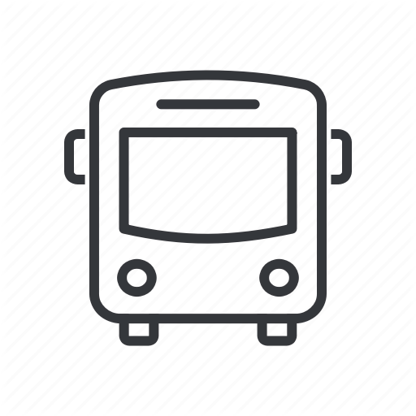

<!-- <ion-header>
  <ion-toolbar>

    <ion-fab horizontal="end" vertical="top" slot="fixed" edge>
      <ion-fab-button color="light">
        <ion-icon name="menu"></ion-icon>
      </ion-fab-button>
      <ion-fab-list>
        <ion-fab-button color="light">
          <ion-icon name="settings"></ion-icon>
        </ion-fab-button>
        <ion-fab-button color="light">
          <ion-icon name="log-out"></ion-icon>
        </ion-fab-button>
      </ion-fab-list>
    </ion-fab>

    <div class="next">
      <ion-grid>
        <ion-row>
          <ion-col size="3">
            
          </ion-col>
          
          <ion-col>
            <h1>The next bus to DB leaves in DB</h1>
            <h2>Get to DB to catch it</h2>
          </ion-col>
        </ion-row>
      </ion-grid>
    </div>
  </ion-toolbar>
</ion-header> -->

<ion-content>

  <div id="map"></div>

  <div class="dets">
    <!-- For as many rows as needed, adjust to make writings dynamic  -->
    <ion-grid>
      <ion-row>
        <ion-col>
          <ion-list>
            <h1>Circuit Bus</h1>
            <ion-list>
              <!-- DUPLICATE, on init -->
              <h4>Stops from DB</h4>
            </ion-list>
            <h2>Destination Point:</h2>
            <h3>Wits Junction</h3>
          </ion-list>
        </ion-col>

        <ion-col>
          <ion-card>
            <ion-card-header>
              <h1>DB</h1>
              <h2>min</h2>
            </ion-card-header>
            <h3>Travel Time: DB</h3>
            <ion-item>
              <ion-icon name="bus" slot="start" style="zoom:0.5; color:#040a5f;"></ion-icon>
              <h4>15:30</h4>
            </ion-item>
          </ion-card>
        </ion-col>
      </ion-row>
    </ion-grid>
  </div>
</ion-content>
